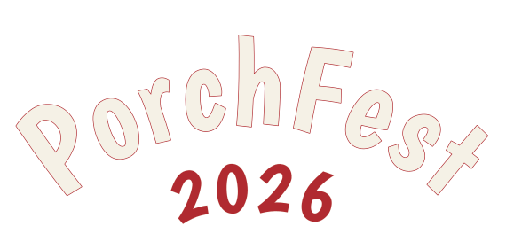
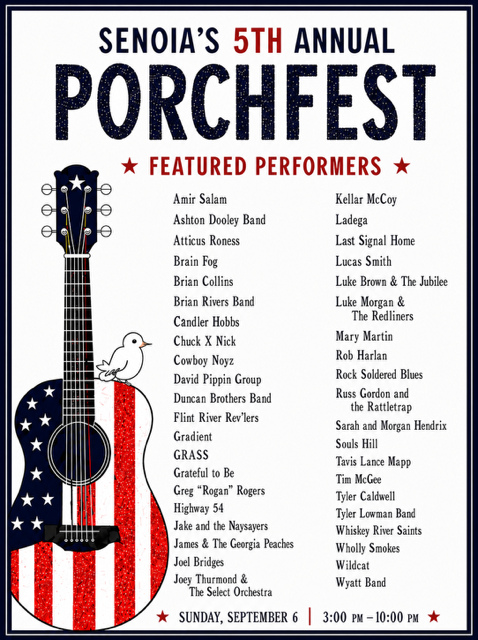
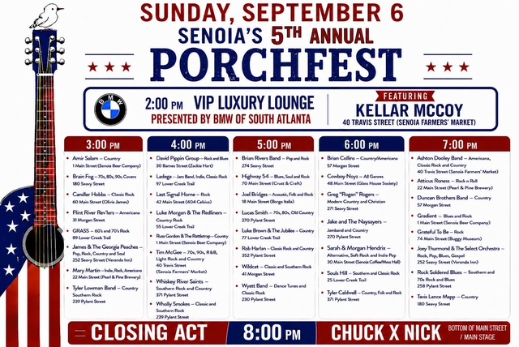

PorchFest's colors and type already come from one place — the ink used on the 2026 shirt-print
design system, carried into the website's src/index.css tokens and the
vector wordmark. This page collects that system in one spot so anyone adding a sponsor page,
a social graphic, a flyer, or a new site section can match it without guessing.
#101D3A,
flag red #B02A30, warm white #F5F1E6 — plus the
true-vector 2026 wordmark. Everything below is either pulled directly from those files or
documents how they're already used across the live site.
Six tokens carry the whole site. Red and navy are the identity; cream is the paper it sits on.
Body copy on cream runs on stone-600/stone-700; card borders on stone-200. Tailwind's slate scale is intentionally unused — it reads cool against the warm cream/navy pairing.
Muted so they sit next to flag red and navy without competing. Not for marketing use — these exist only to color-code map pins.
Oswald carries every heading, label, and button. Yellowtail appears once per page, if at all. Body copy uses no webfont at all — on purpose.
Reserved for the "Senoia" lockup above the wordmark and short taglines — never body copy, never more than one line on a page.
The site is deliberately hardcoded with no CMS and no third webfont for body text — one less network request keeps pages fast. Body copy renders in each device's native UI font.
| Role | Font / weight | Treatment | Example |
|---|---|---|---|
| Hero H1 | Oswald 700 | Uppercase, 2–3.2rem | Porchfest 2026 |
| Section H2 | Oswald 700 | Uppercase, border-bottom flag rule | Volunteer Perks |
| Nav link / button | Oswald 600 | Uppercase, tracking .06–.08em | Schedule |
| Eyebrow / meta | Oswald 500 | Uppercase, tracking .12–.14em, small | Featuring |
| Body | System UI sans | Sentence case, 1–1.02rem / 1.6 | Free admission, all ages. |
| Script accent | Yellowtail | One line max, flag-bright | Senoia |
One file: the true-vector 2026 wordmark (src/assets/porchfest-wordmark.svg) —
the same hand-drawn art that's on the printed merch. It ships as flag-red letterforms on a warm-white
offset shadow, which is why it reads clearly on either ground below without any recoloring. Every
instance on this page loads that same file directly, so it can never drift out of sync.
Both panels render the identical file — the wordmark carries its own warm-white outline, so it never needs a different asset or a swapped fill per background.
src/assets/ at any size — it's vector.The print collateral repeats a small set of moves — worth carrying into any new sponsor sheet, social post, or flyer.


Both images load from public/ — if next year's posters get new filenames per the yearly rollover checklist, update the two <img> sources above to match.
© OpenStreetMap credit visible — a legal requirement, not a style choice.
The copy on senoiaporchfest.org is plain and specific — no CMS boilerplate, no marketing fluff. A few conventions repeat everywhere.
The recurring UI patterns already in use across the site, so a new page reaches for the same shapes.
Primary = flag → flag-deep on hover, for the one action a page wants most. Secondary = ink → flag on hover, for a page's second CTA. Tertiary is an underlined text link.
Who's playing, where, and when — plan your porch-to-porch route.
PorchFest runs on volunteers — grab a shift and be part of it.
The dark "featured" card is used sparingly — one per grid, for the single link a page most wants clicked.
Sponsor names and tiers live in rounded pills on white. Every content section on a light page opens with an uppercase Oswald heading underlined in flag red.
Computed against WCAG 2.1, so "flag-bright is for navy" isn't just a rule of thumb — here's why.
| Pairing | Preview | Ratio | Verdict |
|---|---|---|---|
| ink on cream | Aa | 14.8:1 | AAA |
| cream on ink | Aa | 14.8:1 | AAA |
| pale on ink | Aa | 11.2:1 | AAA |
| flag on cream | Aa | 5.8:1 | AA |
| flag-bright on ink | Aa | 4.7:1 | AA |
| flag (true red) on ink | Aa | 2.6:1 | Fails — use flag-bright |
flag-bright for any red text sitting on navy.flag for red text and accents on cream or white.pale for secondary text on navy — it clears AAA.flag red text directly on ink navy.